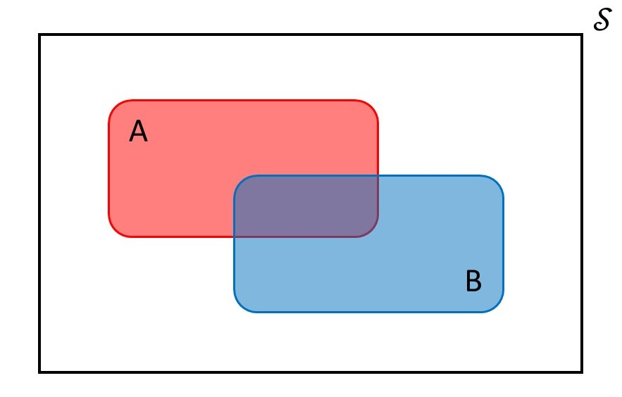

1 Essential Probability
Probability is a vast field within Mathematics. However, the starting point for nearly every course in probability is the development of essential results (or “probability rules”) based on the Axioms of Probability — an agreed upon mathematical framework for describing probability. While we will not make use of these results directly, it is helpful to review them as they lurk in the background of many more useful results.
1.1 Probability of an Event
Any process for which the outcome cannot be predicted with certainty is a random process. The collection of all possible results from this random process is known as the sample space, and elementary probability is centered on events (results of interest) within this sample space.
Definition 1.1 (Sample Space) The sample space for a random process is the collection of all possible results that we might observe.
Definition 1.2 (Event) A subset of the sample space that is of particular interest.
The Axioms of Probability are discussed in terms of such events.
Definition 1.3 (Axioms of Probability) Let \(\mathcal{S}\) be the sample space of a random process. Suppose that to each event \(A\) within \(\mathcal{S}\), a number denoted by \(Pr(A)\) is associated with \(A\). If the map \(Pr(\cdot)\) satisfies the following three axioms, then it is called a probability:
- \(Pr(A) \geq 0\)
- \(Pr(\mathcal{S}) = 1\)
- If \(\left\{A_1, A_2, \dotsc\right\}\) is a sequence of mutually exclusive events in \(\mathcal{S}\), then
\[Pr\left(\bigcup_{i = 1}^{\infty} A_i\right) = \sum_{i = 1}^{\infty} Pr\left(A_i\right).\]
\(Pr(A)\) is said to be the “probability of \(A\)” or the “probability \(A\) occurs.”
The first axiom states that probabilities cannot be negative. The second states that probabilities cannot exceed 1 and that something must result from a random process. The third states that if two events do not overlap, the probability of the combination of the events is found by adding up the individual probabilities. This third axiom begins to develop an idea of probability as an area. Figure 1.1 illustrates a hypothetical sample space \(\mathcal{S}\) with two events \(A\) and \(B\) of interest. In the figure, the two events share some overlap. Variations of this graphic are used in probability courses to develop intuition for several probability rules. What we emphasize is that we are using the area of each event in the figure to represent probability. The applications of probability we will be studying continue to build on this idea of probability as an area.

Probability represents an area.
1.2 Essential Results
While the Axioms of Probability (Definition 1.3) set the foundation, we can combine these axioms to form a set of rules which can be employed to describe a myriad of scenarios. The first rule we review states that the probability of an event not occurring is equivalent to subtracting the probability it does occur from 1.
Theorem 1.1 (Complement Rule) For any event \(A\), the probability of its complement \(A^c\) is given by
\[Pr\left(A^c\right) = 1 - Pr(A).\]
Our interest is not in rigorously developing probability theory; so, we will offer many results without proof. However, to illustrate the connection to the axioms, note that the Complement Rule is a result of the second and third axioms. The second axiom tells us the probability of the sample space is 1, and the third axiom allows us to consider the probability of the union of two mutually exclusive events (which an event and its complement are by definition).
The second rule we consider generalizes the third axiom. The third axiom considers the union of mutually exclusive events, and the Addition Rule defines the probability for the union of arbitrary events.
Theorem 1.2 (Addition Rule) Let \(A\) and \(B\) be arbitrary events, the probability of the union \(A \cup B\) is given by
\[Pr(A \cup B) = Pr(A) + Pr(B) - Pr(A \cap B)\]
where \(A \cap B\) represents the intersection of the two events.
A very helpful technique in mathematical proofs is to “do nothing.” This technique will be a recurring theme later in the text and manifests itself in adding nothing (adding and subtracting the same quantity to an expression) or multiplying by one (multiplying and dividing an expression by the same quantity).
Theorem 1.3 (Total Probability Rule) Let \(A\) and \(B\) be arbitrary events. Then,
\[Pr(A) = Pr(A \cap B) + Pr\left(A \cap B^c\right).\]
Though different than the proof you would likely encounter in a Probability text, we provide the proof below because it illustrates the “do nothing” technique that will be helpful later on.
Proof. Let \(A\) and \(B\) be arbitrary events. We note that \(A \cap \mathcal{S}\) is the set \(A\). And, since the intersection of any set with itself is itself (like multiplying by 1, or “doing nothing” to the set), we have
\[Pr(A) = Pr(A \cap \mathcal{S}).\]
Now, we recognize that an event and its complement together form the sample space; therefore, we can write
\[Pr(A \cap \mathcal{S}) = Pr\left(A \cap \left(B \cup B^c\right)\right).\]
Using a distributive law from set theory, we write this probability as
\[Pr\left(A \cap \left(B \cup B^c\right)\right) = Pr\left((A \cap B) \cup \left(A \cap B^c\right)\right).\]
We now recognize that the events \((A \cap B)\) and \(\left(A \cap B^c\right)\) are mutually exclusive. Therefore, applying the third axiom of probability, we have that
\[Pr\left((A \cap B) \cup \left(A \cap B^c\right)\right) = Pr(A \cap B) + Pr\left(A \cap B^c\right)\]
giving the desired result.
We have described probability as an “area,” and the above results describe various ways of computing that area. However, occasionally we are given additional information that changes the likelihood of an event. Suppose we are interested in the probability an individual makes a shot from the half-court line on a basketball court. Now, suppose we are told the individual plays for the NBA; our probability should reflect this additional knowledge. This is the idea of “conditional probability.”
Theorem 1.4 (Conditional Probability) Let \(A\) and \(B\) be arbitrary events. Then, the probability of \(A\) given that \(B\) will occur is given by
\[Pr(A \mid B) = \frac{Pr(A \cap B)}{Pr(B)},\]
where we read \(A \mid B\) as “A given B.”
Conditional probability assumes \(Pr(B) > 0\); it would not make sense to condition on an event that will not occur. While there are many other rules that are interesting and useful in application, the above rules suffice for our purposes.
1.3 Interpretation of Probability
Again, most probability courses are focused on the mathematics of probability; as a result, rarely is the interpretation of probability discussed. In fact, most individuals rarely think about what they mean by “the probability an event occurs.” From a mathematical perspective, as long as we obey the Axioms of Probability (Definition 1.3), we have a probability; its meaning is irrelevant. But, for practitioners, the interpretation is critical. As it turns out, there are multiple interpretations of probability1. Two interpretations are of particular interest to us. To illustrate, consider the following scenario.
Example 1.1 (Sugar Packets) Restaurants can be sources of anxiety for small children. After placing their order, they must wait (for what seems like an eternity) for that food to arrive. This is different from their experience at home where they typically are not brought to the table until it is time to eat. Parents spend a lot of effort entertaining their children while waiting for their food to arrive. For parents who do not want to limit screen time, the following simple game is surprisingly effective:
Take one of the sugar packets that is generally available at the table. Denote the side with the brand name as the “top side” and denote the side with the ingredient list as the “bottom side.” The parent then takes the sugar packet and, hidden from view, tumbles the packet randomly in their hands. The packet is then placed on the table under the cover of the parent’s hand. The child then declares which side of the packet is facing up by saying “top side” or “bottom side.”
This is similar to flipping a coin, but who carries change with them these days? Consider one round of the above game; suppose the (covered) packet has been placed on the table and the child says “top side.” The question we ask is then “what is the probability the child is correct?”
This simple example illustrates the two commonly applied interpretations of probability. Most people will say the probability the child is correct is 0.5. The reasoning is that there are two possibilities (the top of the sugar packet is face up; or, the bottom of the sugar packet is face up), and these two possibilities are equally likely (since it was randomly shuffled before being placed on the table). Therefore, the probability the child is correct is 0.5. From a classical view of statistics, this interpretation is incorrect. The complication here is what we believe probability is capturing.
From a classical (or “Frequentist”) perspective, probability is capturing the likelihood of an event across repeated trials. From a Bayesian perspective, however, probability is used to quantify our uncertainty. That is, from the Bayesian perspective the phrase “the probability the child is correct is 0.5” is not actually quantifying the likelihood the child is correct — it is quantifying our uncertainty the child is correct. We are only “50% sure” the child is correct. This relies on the “subjective interpretation” of probability.
Definition 1.4 (Subjective Interpretation of Probability) In this perspective, the probability of \(A\) describes the individual’s uncertainty about event \(A\).
Because the subjective interpretation is quantifying an individual’s uncertainty, and since each individual may have different beliefs/information/expertise about the random process, each individual observing the same process may have a different probability. For example, consider asking the question “what is the probability that Netflix saves the latest television series dropped by ABC?” A casual viewer may have little information regarding this process and will rely solely on what they perceive the popularity of the show was among its fan base and news reports they have read online; they may quantify their uncertainty by saying the probability is 0.65. In contrast, an executive at Netflix who is deeply familiar with both the show, its fan base, its ratings in various markets, the interest of leadership to invest in a new series, and the amount they stand to earn by acquiring the property has a different set of knowledge; they may quantify their uncertainty by saying the probability is 0.05. The same process is viewed differently by different observers, leading to different answers.
Statisticians who adhere to the subjective interpretation of probability are known as Bayesians. Classically, statistical theory was developed under the frequentist interpretation, and statisticians who adhere to this perspective are known as Frequentists.
Definition 1.5 (Frequentist Interpretation of Probability) In this perspective, the probability of \(A\) describes the long-run behavior of the event. Specifically, consider repeating the random process \(m\) times, and let \(f(A)\) represent the number of times the event \(A\) occurs out of those \(m\) replications. Then,
\[Pr(A) = \lim_{m \rightarrow \infty} \frac{f(A)}{m}.\]
The frequentist interpretation requires repeating a process infinitely often. When characterizing the probability of an event, the frequentist perspective leans on the future-oriented nature of probability. When we are characterizing the probability an event will occur (future-oriented), we are really thinking about repeating that process infinitely often and determining what fraction of the time the event occurs; we then apply that to the specific process we are about to observe. Of course, this does not always make sense in practice. For example, asking “what is the probability that Candidate A will win the upcoming election” is a one time event. The election cannot be held infinitely often; it will only be held once. In these cases, the frequentist interpretation still imagines infinitely many of these elections. For those who are fans of science fiction, you can think of the frequentist perspective as finding the limit over the infinitely many instances in the multiverse (the proportion of times Candidate A wins the election across all instances of the election in the multiverse). The frequentist perspective is “objective” in the sense that it does not incorporate the observer’s personal beliefs/information/expertise regarding the process.
Returning to Example 1.1, since the result has already occurred, probability does not make sense. Further, since the frequentist perspective does not quantify our uncertainty about the result (as the subjective perspective does), we are left saying that the probability that the child is correct is either 1 (they are correct) or 0 (they are not correct). Admittedly, this is unsatisfying, but we must remember that the frequentist interpretation is not interested in quantifying our uncertainty; it is only interested in the proportion of times the result will occur, and since the result is in the past, it either has occurred (proportion of 1) or it has not (proportion of 0).
This may seem like arguing over semantics, and admittedly, the importance of this discussion is not yet clear. But, we will see that how probability is interpreted impacts how we interpret the results of our statistical analyses.
The frequentist interpretation of probability quantifies the likelihood of an event in repeated observation, and the subjective interpretation quantifies our uncertainty of an event.
As this text focuses on the Bayesian perspective, we adopt the subjective interpretation of probability throughout. Note that this means that two analysts can approach the same problem in the same way and end up with a different conclusion if they have different beliefs!
See the “Interpretations of Probability” entry in the Stanford Encyclopedia of Philosophy.↩︎